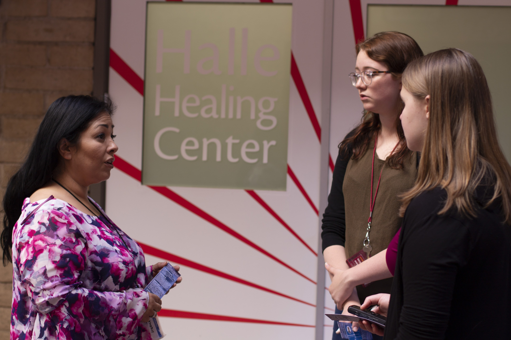

Unsheltered Project Background
Tackling the topic of homelessness in Phoenix was a big task, and one that many would argue can’t be done to the fullest extent in one week. Our project, Unsheltered, focuses on some of the challenges that many people experiencing homelessness go through every day in Phoenix, Arizona. We also reported possible resources.
Our team encountered many unexpected challenges while reporting on the topic, and our goal is to be as transparent about them and our reporting process as possible.
Several people that we approached did not wish to go on the record, be filmed or share their identities. Some said they were tired of seeing reporters try to cover the topic without evoking change. Others said their stories had been previously manipulated for publication and misrepresented who they were.

Aside from our sources’ concerns, we had some of our own. While producing our content, we realized it can be easy to jump to conclusions about an experience we have never personally encountered. We were conscious of the material we had gathered while reporting and aimed not to editorialize.

We were also aware that there were too many facets of homelessness and how people come to be unsheltered. The time frame of our project limited our ability to fully investigate this issue.
Our team of reporters traveled to Phoenix from all over the country as part of the Dow Jones News Fund program, which was hosted by the Walter Cronkite School of Journalism at Arizona State University. We had one week, from May 19 to May 26 in 2018, to gather information and produce this website while attending workshops daily for training. We hope that our readers find our content valuable and learn something new.
From the 20 reporters in the 2018 DJNF group to you, we hope you enjoy our project.